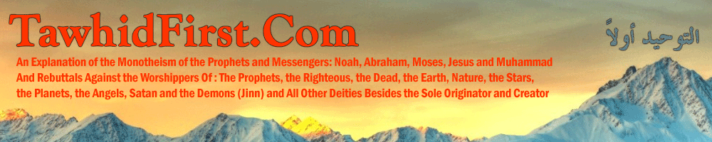

| Monday, 11 August 2025 Home • About Us • Contact Us |
|  | |
|
|
|
You are here:
Home /
Basics
Mail to a Friend • Printer friendly  Introduction The affirmation of the existence of a supreme creator (khaaliq), originator (badee') and regulator (mudabbir) is the most obvious of self-evident, rational truths. The Books were not revealed and the Messengers were not sent primarily to argue for this truth. Rather, the call of the Messengers was to invite people back to worshiping this supreme Creator, alone, without any patners, after mankind had deviated to the worship of other deities such as the sun, the moon, the righteous dead, and the natural phenomena amongst others. False religion is characterized by the giving of worship to others besides the supreme creator, Allaah, whilst acknowledging his sole Lordship over the creation. In this article we want to corroborate the above points from the Qur'anic evidences.
What the Pagans of Makkah Affirmed Here we looked at the affirmation of the pagans of Allaah's Lordship over the whole creation.
These pagans would worship other deities in times of ease, but in times of calamity and hardship they would call upon Allaah alone, knowing full well that only He has the power over all things. The Qur'anic argument is that it is foolishness and false worship to take other deities alongside Allaah after acknowledging that He alone creates, owns, regulates, gives life, takes life, sustains and provides, is the source of benefit and harm and so on and that the entities to whom worship is given do not have independent or inherent control over harm and benefit. This is the nature of all false worship and false religion, it involves the subjugation of man to others besides the sole Creator, and this is the very essence of oppression (dhulm). It is from this false worship, that all other manifestations of oppression (dhulm) plague mankind. Next, we can look at the types of entities worshipped alongside or besides Allaah, whilst noting that idol-worship is most often a medium through which the worship of living or dead entities is really intended, be they human, angels or devils (jinn), with the most common deity being dead righteous humans. Those Worshipped Besides or Alongside Allaah We find in the Qur'an many verses establishing that those entities worshipped besides Allaah include Prophets:
 وَإِذْ قَالَ اللّهُ يَا عِيسَى ابْنَ مَرْيَمَ أَأَنتَ قُلتَ لِلنَّاسِ اتَّخِذُونِي وَأُمِّيَ إِلَـهَيْنِ مِن دُونِ اللّهِ قَالَ سُبْحَانَكَ مَا يَكُونُ لِي أَنْ أَقُولَ مَا لَيْسَ لِي بِحَقٍّ إِن كُنتُ قُلْتُهُ فَقَدْ عَلِمْتَهُ تَعْلَمُ مَا فِي نَفْسِي وَلاَ أَعْلَمُ مَا فِي نَفْسِكَ إِنَّكَ أَنتَ عَلاَّمُ الْغُيُوبِ وَإِذْ قَالَ اللّهُ يَا عِيسَى ابْنَ مَرْيَمَ أَأَنتَ قُلتَ لِلنَّاسِ اتَّخِذُونِي وَأُمِّيَ إِلَـهَيْنِ مِن دُونِ اللّهِ قَالَ سُبْحَانَكَ مَا يَكُونُ لِي أَنْ أَقُولَ مَا لَيْسَ لِي بِحَقٍّ إِن كُنتُ قُلْتُهُ فَقَدْ عَلِمْتَهُ تَعْلَمُ مَا فِي نَفْسِي وَلاَ أَعْلَمُ مَا فِي نَفْسِكَ إِنَّكَ أَنتَ عَلاَّمُ الْغُيُوبِ 
And likewise Angels have been taken as deities, and similarly the Jinn (demons, devils):
وَيَوْمَ يَحْشُرُهُمْ جَمِيعًا ثُمَّ يَقُولُ لِلْمَلَائِكَةِ أَهَؤُلَاء إِيَّاكُمْ كَانُوا يَعْبُدُونَ قَالُوا سُبْحَانَكَ أَنتَ وَلِيُّنَا مِن دُونِهِم بَلْ كَانُوا يَعْبُدُونَ الْجِنَّ أَكْثَرُهُم بِهِم مُّؤْمِنُونَ
And likewise the righteous servants of Allaah were also taken as deities throughout the history of nations and civilizations:
إِنَّ الَّذِينَ تَدْعُونَ مِن دُونِ اللّهِ عِبَادٌ أَمْثَالُكُمْ فَادْعُوهُمْ فَلْيَسْتَجِيبُواْ لَكُمْ إِن كُنتُمْ صَادِقِينَ
Here it is established that those called upon besides Allaah are slaves (ibaad) themselves. Invocation (du'a) is itself worship which is only for Allaah, alone, and for this reason du'a (invocation and supplication) is used interchangeably with worship (ibaadah), and there occurs in the authentic statement of the Prophet Muhammad (alayhis salaam), "Du'a (invocation) is ibaadah (worship)." That this verse refers to other human beings (i.e. the slaves of Allaah that are being called upon) is established through other verses:
أُولَـئِكَ الَّذِينَ يَدْعُونَ يَبْتَغُونَ إِلَى رَبِّهِمُ الْوَسِيلَةَ أَيُّهُمْ أَقْرَبُ وَيَرْجُونَ رَحْمَتَهُ وَيَخَافُونَ عَذَابَهُ إِنَّ عَذَابَ رَبِّكَ كَانَ مَحْذُورًا
Those being referred to in this verse are the Prophets, the Angels and the Righteous, since the male, plural verb form has been used for the verbs (يَبْتَغُونَ), which is to desire, to seek and (يَرْجُونَ), which is to hope, and (يَخَافُونَ), which is to fear. This cannot be said of idols or inanimate deities which in most cases are simply the focal points for the worship that is really intended towards humans in any case, and this is how the Qur'an addresses the subject of idol-worship, in that devotion to idols in reality encompasses the deification and worship of humans. These idol-worshipers clearly deny that their idols have any power over harm or benefit. With that being the case, the Qur'an also explains the reasoning and justification provided by those who worship deities besides Allaah: The Argument and Justification of Taking Other Deities Besides Allaah We should also understand that in the Qur'an, Allaah has refuted the four roots or arguments through which the worship of others besides Allaah is justified. They are (as outlined in the verses Saba 34:22-23):
All of these are varying levels of the usurping of Allaah's authority in the sense that it is (falsely) assumed of others, with decreasing level of severity (in the order presented above), and all false religion and false worship in all nations and civilizations has found its basis upon one of these four claims or justifications. What the Prophets and Messengers Called To They all called to the worship of Allaah alone, without any partners, since giving worship to others alongside Allaah is the greatest injustice (dhulm), since it is denying the favour and blessing of Allaah, and giving recognition, praise and worship to others for the favours and bounties that originate in truth with Allaah. This is what is called "infidelity" (kufr) and also "associationism" (shirk), and this is the greatest crime, more so than murder, theft, adultery and the likes. Allah, the Most High said:
وَقَضَى رَبُّكَ أَلاَّ تَعْبُدُواْ إِلاَّ إِيَّاهُ
And also:
وَاعْبُدُواْ اللّهَ وَلاَ تُشْرِكُواْ بِهِ شَيْئًا
And also:
وَمَا أَرْسَلْنَا مِن قَبْلِكَ مِن رَّسُولٍ إِلَّا نُوحِي إِلَيْهِ أَنَّهُ لَا إِلَهَ إِلَّا أَنَا فَاعْبُدُونِ
So this was the call of the Prophets and Messengers. As for worship (ibaadah), its meaning, definition, forms and types, then that will be the subject of other articles, and it is a great and vital subject that one ought to grasp well in order to understand the distinction between true religion (Tawhid, Monotheism) and false religion (the deification of others besides Allaah and giving worship to them). For now, we can mention some brief words: Brief Mention of worship and Its Types Worship (ibaadah) refers to those inward and outwards actions that Allaah loves and is pleased with, and they include: supplication (du'a), this is from the greatest of types of worship, and the Prophet (alayhis salaam) said, (الدعاء هو العبادة), "Invocation is worship", so it has been equated with worship, and this is because invocation is accompanied inevitably with other forms of worship such as love, fear, hope, reliance and so on. This is why in the Qur'an we find a very strong prohibition of calling upon others besides Allaah. This should not be confused with calling upon someone for some matter in which he or she has the ability to aid or assist, as this is permissible with respect to those who are a) alive, b) can hear, c) are capable in that matter c) are in such proximity that allows them to fulfill the request. Also from the types of worship are love (mahabbah), fear (khawf), hope (rajaa'), seeking aid (isti'aanah), seeking refuge (isti'aadhah), seeking rescue (istighaathah), reliance (tawakkul), awe (khasyhah), aspiration (raghbah), fear (rahbah), humble submission (khusoo') penitence (inaabah), sacrifice (dhabh), making oath (nadhr) and we will treat each of these in separate articles. Seeking intercession With respect to the fourth justification mentioned earlier in this article, Allaah has made negation of the claim of the right of worship (invocation) for deities besides Himself upon the (false belief) that they are able to effect intercession independently, on their own right, without the permission of Allaah (for them to intercede) and secondly (what is found in other verses), without Allaah's acceptance and pleasure with the one for whom they are interceding for. That this (seeking intercession) is the argument adduced, is explained in two verses in the Qur'an. The first:
أَلَا لِلَّهِ الدِّينُ الْخَالِصُ وَالَّذِينَ اتَّخَذُوا مِن دُونِهِ أَوْلِيَاء مَا نَعْبُدُهُمْ إِلَّا لِيُقَرِّبُونَا إِلَى اللَّهِ زُلْفَى إِنَّ اللَّهَ يَحْكُمُ بَيْنَهُمْ فِي مَا هُمْ فِيهِ يَخْتَلِفُونَ إِنَّ اللَّهَ لَا يَهْدِي مَنْ هُوَ كَاذِبٌ كَفَّار
And in the second:
وَيَعْبُدُونَ مِن دُونِ اللّهِ مَا لاَ يَضُرُّهُمْ وَلاَ يَنفَعُهُمْ وَيَقُولُونَ هَـؤُلاء شُفَعَاؤُنَا عِندَ اللّهِ قُلْ أَتُنَبِّئُونَ اللّهَ بِمَا لاَ يَعْلَمُ فِي السَّمَاوَاتِ وَلاَ فِي الأَرْضِ سُبْحَانَهُ وَتَعَالَى عَمَّا يُشْرِكُونَ
So in these two verses we see the reason given to justify calling upon others (i.e. other humans, or idols which are focal points for the worship directed at other humans):
And this subject will be addressed in other articles on this website as it is a subject of great contention between the followers of the Prophets and Messengers and those who deviate and direct worship to others besides Allaah. Summary All false religion incorporates the belief in a supreme creator but whose authority is falsely ascribed to others besides Him at any one of four different levels, either in a) independent ownership (mulk) of the creation of something from it, or b) in sharing (sharikah) of the ownership of the creation or something in it, or c) the giving of aid and assistance (mudhaaharah) to the creator in maintaining the universe, or d) in the right of independent intercession (shafaa'ah) in the absence of the granting of permission, pleasure and acceptance by the Creator. Upon any of these four justifications, other deities are set up alongside the sole creator and given worship (from the many types of worship mentioned). Such deities include Prophets, the righteous, ancestors, the angels, the jinn (devils), the natural phenomena, stones, trees, animals and the likes and all of this is false worship, since there is a universal truth upon which the entire universe is created and held together, which is that none has the right to be worshipped alone, except Allaah, the Originator and Creator of the heavens and earth. It is for this reason that mankind was created, and this is the ultimate justice (adl) upon which all manifestations of justice emanate, and all mischief, corruption, harm, injustice and tyranny occur as a result of the departure from this truth - and this is a law and rule with respect to how the creation operates. These themes will be expanded upon in other articles inshaa'Allaah.
Link to this article: Show: HTML Link • Full Link • Short Link Related Articles: Add a Comment (comments are currently moderated) You must be registered and logged in to comment. |
|
|
© TawhidFirst.Com. All rights reserved.
|